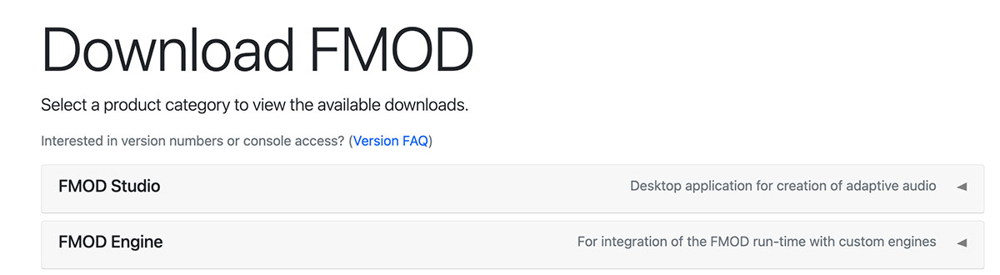
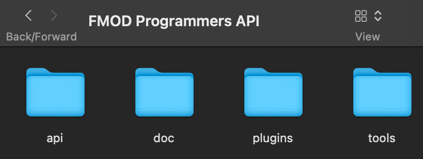
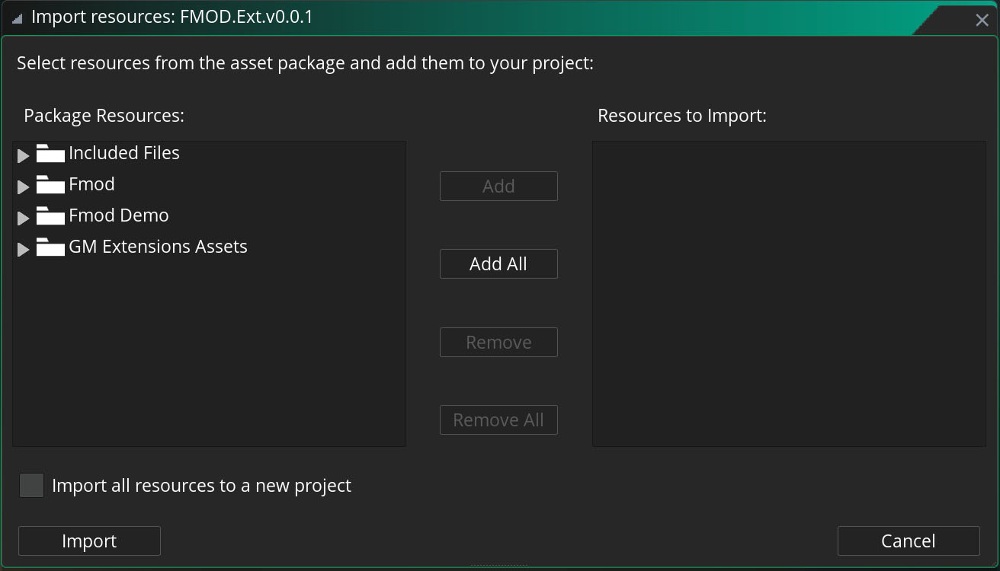
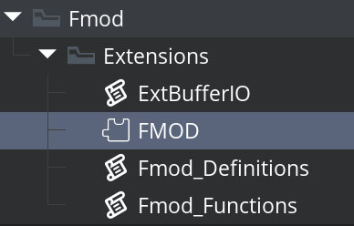
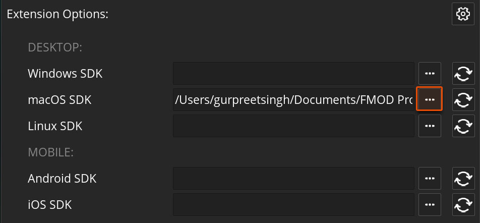

Setting Up FMOD¶
Go to FMOD Downloads.
Note
To access the downloads you need to register first.
Download FMOD Studio and FMOD Engine. As of writing this guide, the latest version is 2.03.20, which is supported.

For Studio, download the package for the platform you are developing on.
For Engine, download packages for the platforms you want to publish your game to.
After installing the Engine API, open the installation and remember the location of the folder, which should contain the following folders in it ("api", "doc", etc.)

Setting Up GameMaker¶
Download the latest package from the Releases page of this repository.
Open your GameMaker project or create a new one.
Drag the .yymps file from the downloaded package into your GameMaker window, or go into Tools -> Import Local Package to select the .yymps file.

The only folder required to use FMOD is "Fmod". Click on it and select Add.
This package also includes a demo of FMOD, for which you need to import everything (Add All).
Finally, select Import.
In your Asset Browser, expand the "Fmod" folder, expand "Extensions", and double-click on FMOD.

This will open the Extension Editor which contains the extension's parameters.
Here you need to set the SDK locations for the platforms the game will be exported to. This needs the location of the FMOD Engine folder.

Here the macOS API is entered as the intended target here is macOS. Use the Browse [...] button to find and select your FMOD Engine directory (the folder that contains the "api" folder, not the "api" folder itself).
FMOD set-up is now complete. Let's look at how you can import banks from your FMOD Project and play events.
FMOD Systems¶
There are functions for initialising the FMOD Core System, and the FMOD Studio System.
If you are making use of FMOD Studio, you only need to initialise that, which also initialises the FMOD Core system underneath.
If you are only making use of FMOD Core, you will only need to initialise that. The code examples below show how to do both.
FMOD Init & Loop¶
Your game needs to run some initialisation code (e.g. in a Create event) and loop code (in a Step event) for FMOD to work.
The following example code can be placed in an "FMOD manager" object's Create event, which initialises the system:
``gml var _max_channels = 1024 var _flags_core = FmodInitFlags.Normal; var _flags_studio = FmodStudioInitFlags.LiveUpdate;
macro USE_FMOD_STUDIO true // Are we using FMOD studio (true) or just core (false)?¶
macro USE_DEBUG_CALLBACKS false // Should debugging be initialised?¶
/* If we enable debug callbacks in the macro above set them ON.
Note that this extension ships the non-logging build of FMOD, so
fmod_debug_initialize() always fails with FmodResult.Unsupported.
It is kept here because the call is harmless and the extension can be
rebuilt against FMOD's logging (fmodL) libraries if you need it.*/ if (USE_DEBUG_CALLBACKS) { fmod_debug_initialize(FmodStudioDebugFlags.LevelLog, FmodStudioDebugMode.Callback); }
/ If we want to use FMOD_STUDIO / if (USE_FMOD_STUDIO) { /* If you are only using Studio you need this. It creates the Studio System and prints its result to the Output Log. It then initialises the system with the previously set variables, printing the result of that function.
The FMOD Studio System function also initialises the core FMOD system, which is why you do not need to call fmod_system_create() here.
*/
fmod_studio_system_create();
show_debug_message("fmod_studio_system_create: " + string(fmod_studio_last_result()));
fmod_studio_system_init(_max_channels, _flags_studio, _flags_core);
show_debug_message("fmod_studio_system_init: " + string(fmod_studio_last_result()));
/*
FMOD Studio creates and initialises an underlying core system to work with.
GMFMOD and GMFMODStudio are separate extensions with separate handle
registries, so a reference made by one means nothing to the other. The core
system crosses as a raw pointer instead: fmod_system_adopt() registers that
same system in GMFMOD and selects it, so the Core functions operate on FMOD
Studio's core system.
*/
fmod_main_system = fmod_system_adopt(fmod_studio_system_get_core_system_ptr());} // If we want to use FMOD Core only else { /* If you are only using Core you only need this.
It creates and initialises the core FMOD system, printing the result of each call to the Output Log.
*/
fmod_main_system = fmod_system_create()
show_debug_message("fmod_system_create: " + string(fmod_last_result()))
fmod_system_init(_max_channels, _flags_core)
show_debug_message("fmod_system_init: " + string(fmod_last_result()))} ``
Your manager object should also have a Step event with the following code in it:
gml
if (USE_FMOD_STUDIO) {
/*
If you are only using Studio you need this.
This call will update the STUDIO system and the underlying CORE system.
*/
fmod_studio_system_update();
}
else {
/*
If you are only using Core you only need this.
*/
fmod_system_update();
}
Playing Events¶
If you are not familiar with FMOD, watch this tutorial.
This section covers how a bank is loaded and an event is started. For the rest of the functionality, view the Function Reference in the Wiki. Every function listed in the wiki includes the name and documentation of its underlying FMOD API function, which is useful if you are following a tutorial that uses the original FMOD API functions.
Once you have set up your FMOD project, go to File -> Build to export the banks.
Copy the banks into the datafiles folder of your GameMaker project, to add them to your Included Files.
In your game code, load your bank with fmod_studio_system_load_bank_file:
gml
bank_ref = fmod_studio_system_load_bank_file(fmod_path_bundle("master.bank"), FmodStudioLoadBankFlags.Normal);
Then load your strings bank with fmod_studio_system_load_bank_file so you can look-up events in the bank:
gml
strings_bank_ref = fmod_studio_system_load_bank_file(fmod_path_bundle("master.strings.bank"), FmodStudioLoadBankFlags.Normal);
Load the event description, using its name defined in FMOD Studio with the fmod_studio_system_get_event function:
gml
event_description_ref = fmod_studio_system_get_event("event:/Ambience/Country");
Create an instance of the event description before playing it, using fmod_studio_event_description_create_instance:
gml
event_description_instance_ref = fmod_studio_event_description_create_instance(event_description_ref);
Finally, play the instance so you hear sound using fmod_studio_event_instance_start:
gml
fmod_studio_event_instance_start(event_description_instance_ref);